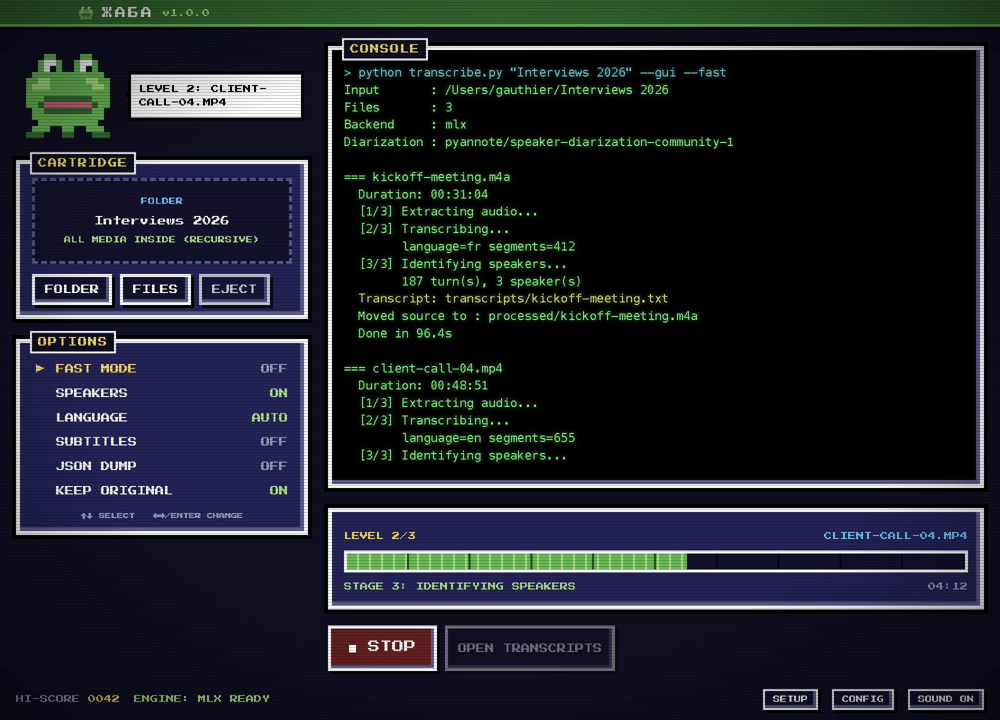

THE FROG THAT LISTENS
Drop in your meetings, interviews and lectures.
Get back clean transcripts that say who said what.
All on your own computer. Nothing is uploaded.
FOR MAC & WINDOWS · FREE · OPEN SOURCE

OpenAI's best open speech model. It handles accents, jargon and noisy rooms far better than built-in dictation.
pyannote speaker detection labels each line. Give names like "Gauthier, Client" and they replace SPEAKER_00.
The language is detected automatically for each file. French on Monday, English on Tuesday, no settings to change.
Audio never leaves your machine. No account, no subscription, no cloud. Confidential calls stay confidential.
Drop a whole folder. Every audio and video file inside becomes a transcript, and the originals are filed away tidily.
Switch on SUBTITLES for an .srt next to each transcript, or JSON DUMP for word-level timings.
Drag a folder, or a few files, onto the cartridge slot. MP3, WAV, M4A, MP4, MOV, MKV and more are accepted.
Use the arrow keys like a real menu. FAST MODE is about three times quicker. SPEAKERS adds the labels.
Each file is a level: extract audio, transcribe, identify speakers. The frog hops while it works.
Transcripts land in a transcripts folder beside your media. Originals move to processed.
# Source : kickoff-meeting.m4a # Detected language : fr # Duration : 00:31:04 # Speakers detected : 3 (Gauthier, Client, SPEAKER_02) # Transcription : mlx-community/whisper-large-v3-mlx # Diarization : pyannote/speaker-diarization-community-1 [00:00:03] Gauthier: Bonjour à tous, merci d'être là. [00:00:07] Client: Merci à vous. On commence par le planning ? [00:00:12] Gauthier: Oui. Trois ateliers en novembre, puis la restitution. [00:00:19] SPEAKER_02: Et les données, on les reçoit quand ?
Apple Silicon runs Whisper on the GPU through MLX. This is the fastest way to play.
APPLE SILICON (M1–M4) INTEL MACmacOS 12+ · Python 3.10+ · ffmpeg
Uses faster-whisper. It runs on any modern CPU and uses an NVIDIA GPU automatically when one is present.
INSTALLER (.EXE) PORTABLE (NO INSTALL)Windows 10/11 64-bit · Python 3.10+ · ffmpeg
# Mac brew install python ffmpeg # Windows (PowerShell) winget install Python.Python.3.12 Gyan.FFmpeg
Mac, first launch: жаба is not notarized by Apple yet, so macOS blocks it once. Open it, click Done, then go to System Settings → Privacy & Security and click Open Anyway. If macOS says the app is "damaged", run this in Terminal and try again:
xattr -cr /Applications/жаба.app
Windows, first launch: on the SmartScreen prompt, click "More info" then "Run anyway".
Жаба means "toad" or "frog" in Russian and Ukrainian. Frogs sit very still and listen to everything. Say it "ZHA-ba".
On an Apple Silicon Mac with FAST MODE, a one-hour meeting usually transcribes in a few minutes. Speaker identification adds time because it runs on the CPU for reliability. Windows speed depends on your processor, or your NVIDIA card if you have one.
No. The only internet use is the one-time download of the libraries and models. After that you can unplug the network cable and play.
After a successful transcript they move into a processed folder next to them. Turn on KEEP ORIGINAL to copy them there instead. Files that fail go to failed so a batch never stops halfway.
Yes. The engine is a single Python script.
python transcribe.py ~/Recordings --fast --speakers "Gauthier,Client" --srt
↑ ↑ ↓ ↓ ← → ← → B A